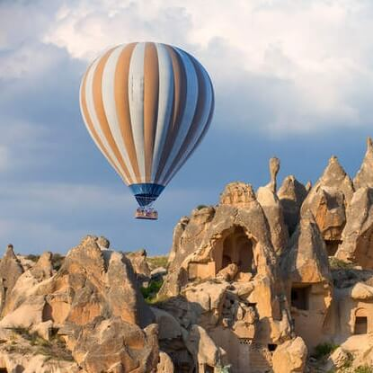
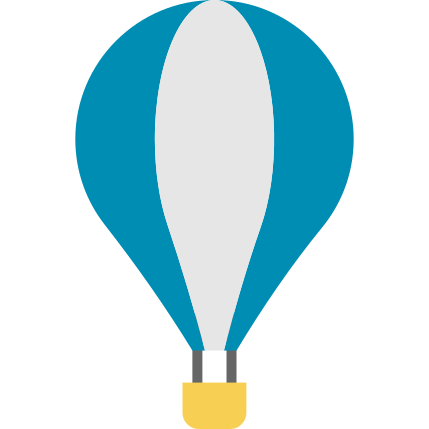

Peri Bacaları Tanıtımı
Peri Bacaları Tanıtımı Gelin ve Nevşehir'in gizli güzelliklerini keşfedin.
Sürekli açık. Ziyaret için rezervasyona gerek yoktur.

Peri Bacaları Tanıtımı Gelin ve Nevşehir'in gizli güzelliklerini keşfedin.
Sürekli açık. Ziyaret için rezervasyona gerek yoktur.
Sadece ülkemizin değil, dünyanın en gizemli yerlerinden biri olan Kapadokya'yı gezerken derin bir merak duyduğunuzu biliyoruz. 'Peri bacaları nasıl oluştu, insanlar peri bacalarının içlerini ustalıkla nasıl oydu, bu yeraltı şehirlerini kimler yaptı, o kadar insan yerin altında nasıl yaşadı' diye binlerce soru geliyor gezginin aklına.
Peri bacaları oluşumunun bilimsel açıklaması olmasına rağmen mistik havasının da şöyle düşündürdüğü biliyoruz; 'Kapadokya eskiden perilerin cenneti miydi, yoksa doğa bir mucize mi göstermek istedi!'

Kapadokya denilince akla ilk gelen şeylerden birisi de şüphesiz sıcak hava balonları ile yapılan turlar. Her sabah gün doğumundan önce yüzlerce sıcak hava balonlarından oluşan konvoy ile Kapadokya'nın eşsiz güzellikteki manzaralarını havadan izlemek katılımcılar için gerçekten olağanüstü ve rüya gibi bir deneyim.
ATV turları, Kapadokya'yı gezmenin heyecan verici, eğlenceli ve farklı bir yoludur. Bölgenin eşsiz ve muhteşem vadileri, dünyanın en iyi ATV turlarından birini deneyimlemenize fırsat verir. ATV turlarının herkes için uygun bir aktivite olduğunu söylemeliyiz.